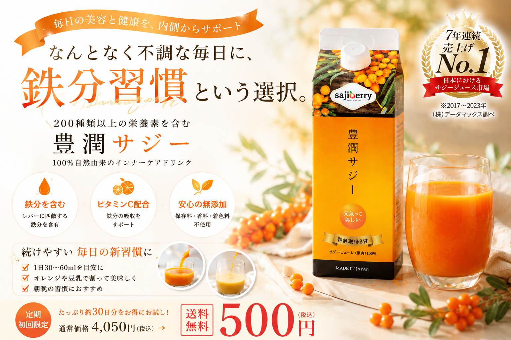
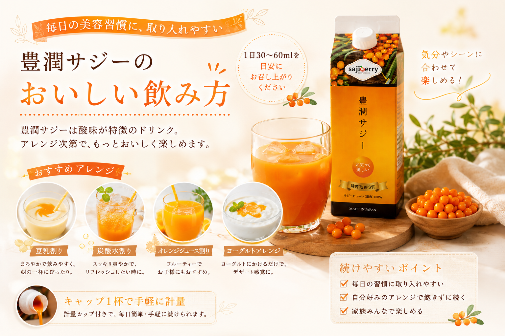
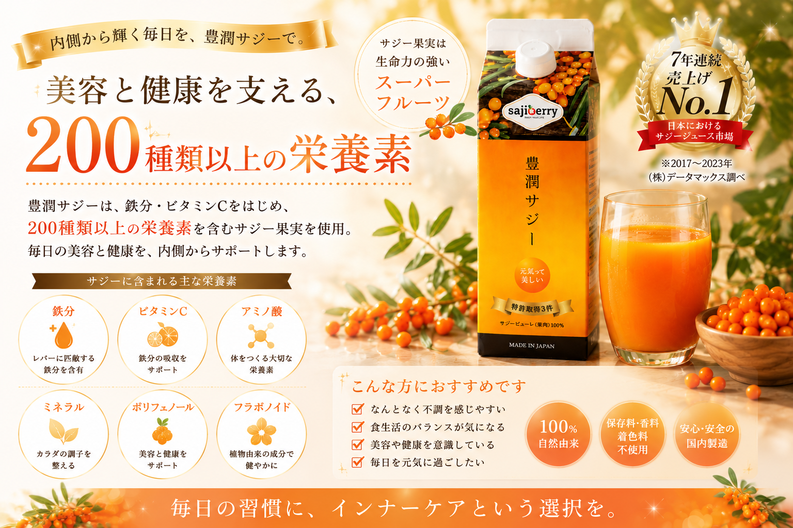
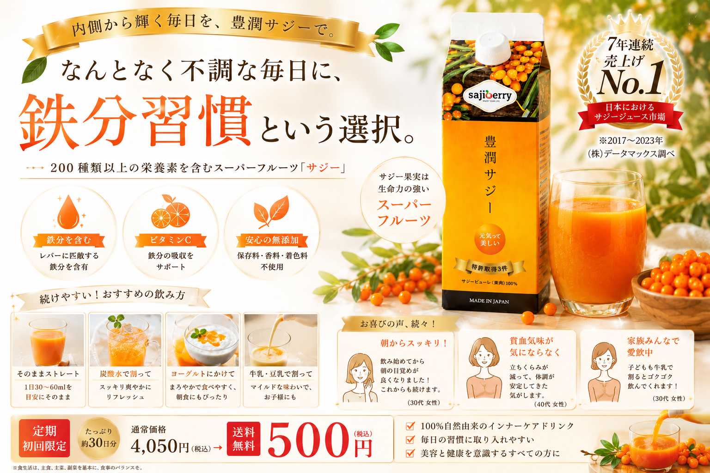
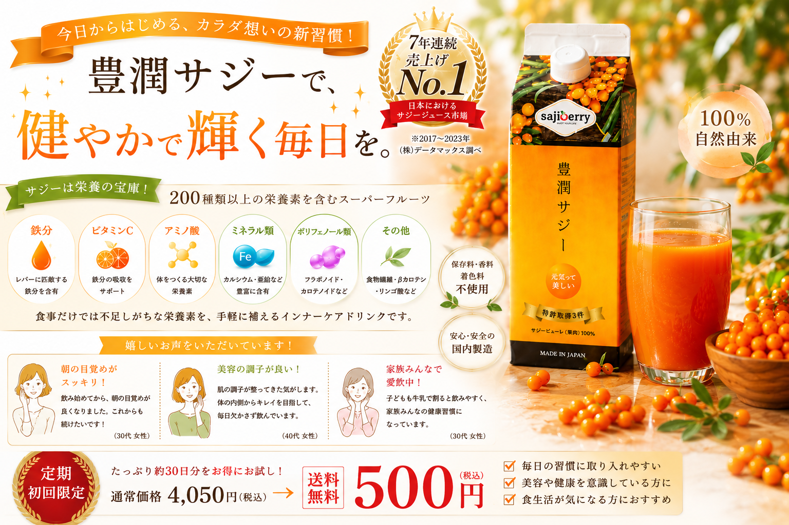

忙しい毎日だからこそ、 内側からのケアをもっと手軽に。 美容と健康を意識する女性たちに選ばれている、 人気のインナーケアドリンク「豊潤サジー」。
▶ 公式サイトはこちら
仕事、 家事、 育児、 毎日忙しく過ごしていると、 自分のケアが後回しになってしまうことも。 豊潤サジーは、 そんな現代女性のライフスタイルに寄り添う、 毎日のインナーケア習慣として注目されています。
毎日のルーティンへ取り入れやすい、 手軽なドリンクタイプ。
1日30ml〜60mlを目安に、 自分のペースで続けられます。
保存料・香料・着色料不使用。 自然由来のインナーケア。
美容や健康を意識していても、 忙しい毎日の中で栄養バランスまで完璧に整えるのは簡単ではありません。 豊潤サジーは、 鉄分やビタミンCをはじめ、 200種類以上の栄養素を含むサジー果実を使用。 毎日の食生活へ手軽に取り入れやすく、 美容習慣をサポートするドリンクとして人気を集めています。

豊潤サジーは酸味のあるドリンクだからこそ、 さまざまなアレンジで楽しめるのも魅力。 自分に合った飲み方を見つけることで、 毎日の習慣として続けやすくなります。
サジー特有の酸味は、 最初は驚く方もいますが、 豆乳やジュースで割ることで、 まろやかで飲みやすい味わいへ。 毎日の気分やライフスタイルに合わせて、 自由にアレンジできることも、 豊潤サジーが支持される理由のひとつです。

サジー果実には、 鉄分だけでなく、 ビタミンC、 アミノ酸、 ミネラル、 ポリフェノールなど、 さまざまな栄養素が含まれています。
毎日の栄養バランスを意識する方にも。
美容習慣をサポートする成分として注目。
ナチュラルなインナーケアドリンク。

毎日続けるものだからこそ、 始めやすさも重要。 豊潤サジーは、 初回500円送料無料で試せる定期コースが用意されています。
美容ドリンクは、 “続けられるか不安” と感じる方も少なくありません。 豊潤サジーは、 初回お試し価格が用意されているため、 まずは自分のライフスタイルに合うか試しやすいのも魅力。 毎日の美容習慣を見直したい方に、 注目されているインナーケアドリンクです。
▶ 初回500円で試してみる
スキンケアだけでなく、 毎日の食生活やインナーケアを意識する人が増えている今。 美容習慣も、 “外側だけではない” 時代へ変わり始めています。
忙しい毎日の中でも、 自分自身を大切にする時間を少しだけ。 豊潤サジーは、 そんな“毎日続ける美容習慣”を サポートするドリンクとして、 多くの女性に選ばれています。
▶ 豊潤サジー公式サイトを見る